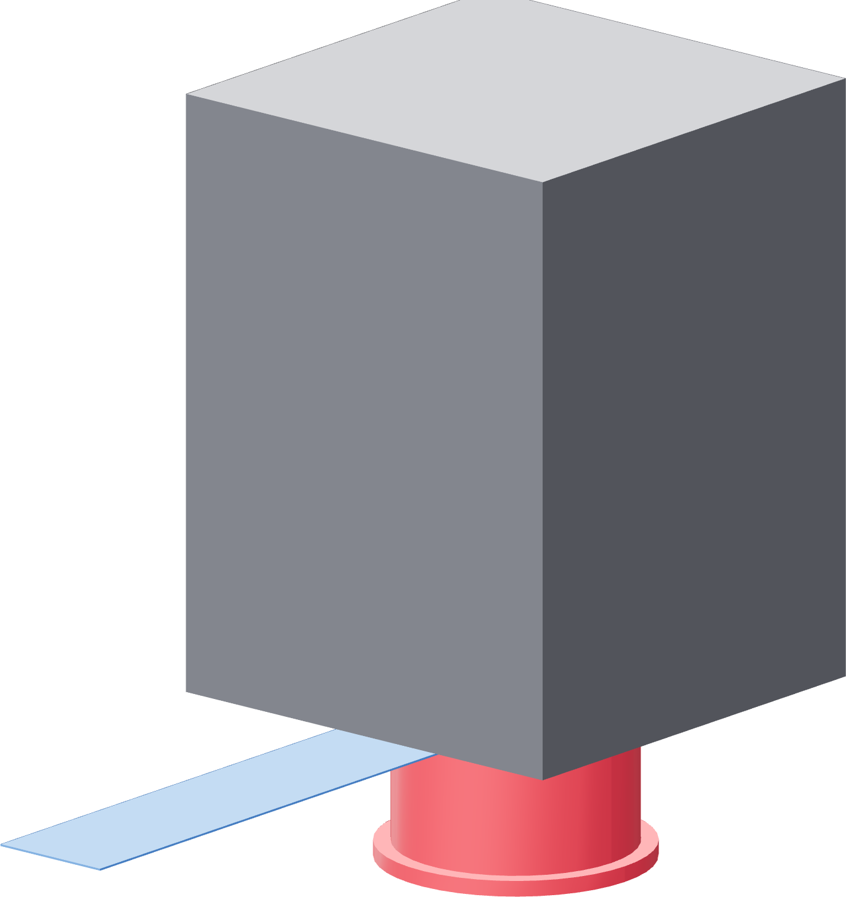

The pulley on the shaft
This is the one dimension on the fixture you set with a feeler blade, and it is what puts the belt in the middle of the printed tooth zone.

The datum is the pilot
Not the shaft end. The pulley's outer face stands 0.85 mm beyond the nominal 21 mm shaft end, so a pulley pushed flush to the shaft tip is a pulley in the wrong place.
| Gap to set | 0.25 mm |
| Pilot diameter | Ø38.1 mm |
| Pulley bore | 6.35 mm |
| Set screws | 2, radial |
- Measure the pulley's actual overall length with the calliper. Nominal is 20 mm; use what you measure.
- Slide it onto the shaft, flanged end toward the motor, until the distance from the pilot's front face to the pulley's outer face is that measured length plus 0.25 mm.
- Or, equivalently: slip a 0.25 mm / 0.010 inch feeler blade between the motor-side flange and the pilot and close the pulley onto it.
- Turn the pulley until one set screw is over the shaft's D-flat. Tighten that one first.
- Tighten the second set screw against the round part of the shaft.
- Withdraw the blade and spin the pulley by hand.
Gate — an air gap that stays
The pulley turns with the shaft, and there is visible daylight between its motor-side flange and the stationary pilot. If the flange rubs the pilot, the belt is 0.25 mm low and the pulley is dragging on the motor.